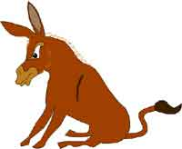

Sister
Marie’s
flexible
approach to solving all problems
Pin the
tail of the donkey
Fourtune telling
Camel spit analysis
Crystal gazing – what a ball
The secret to solving all problems is to be flexible, have a smorgasbord of strategies up your sleeve, use a range of technologies and treat each problem as a solution in reverse.
Over the years, I have tried a range of things including:
- palm tree readings (bad in coconut season)
- taro cards (I found carrots better though)
- beer glass analysis (West End is best – thick and slimy froth)
But the following are my favourites. So come to my exotic tent in the Alcazar and tell me your problems. My psychic powers and high tech methods will have you solved in no time.
This is great fun, but not for the donkey. You tell me your problem, I then creep up and stab the donkey’s tail with a pin. What it does next -bucks, bites, EEE AWWS or does a poo - will tell me how to solve your problem.
But the Alcazar RSPCA is on to me, so I’ll only do this on special request on a full moon.

That’s why the Alcazar donkey always looks suspicious.
You tell me the titles of your four favourite tunes. I then calculate your base line vibrating resonance on an 8 point scale richter scale. From your fourtunes, I can then tell your fortune. I have a Certificate 11 in Psychic Analysis from the Society of Morphic Resonance.

Fourtune telling
More complex - Advanced Diploma in Camel Spit Analysis (including Olfactory Interpretation) but I’m gifted. This is a collaborative effort between camel, psychic and you.
Your task: Know your problem. Then go to the entrance of the Alcazar and torment the spitting camel.
Pretty soon you’ll come backed slimed. The position, size, shape, texture, colour and olfactory intensity of the camel’s spit pattern is what I’ll analyse to reveal all.
Hint: Don’t let the camel spit dry, as it burns through your clothes and you get a nasty case of itching hives.
Spitting camel – see that lump in his neck getting ready!
Let the clear become blurred! Tell me your problem and I will gaze into my crystal ball to see what lies in store. Works best following a small partake of pre-gazing elixir - three Jim Beams and dry, in a tall glass with no ice.
A blurred view of crystal gazing – a la Jim Beam x 3
Other methods available on request and unwise counsel sprouted!
igniting the spark for web-based roleplay | 2003